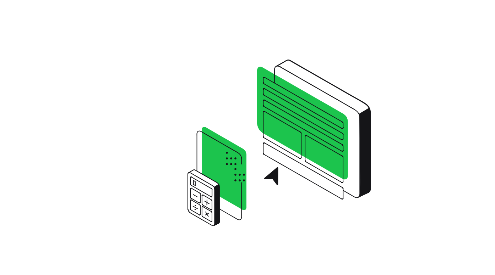

El proposito de la pagína es cuidar la vida de tu desktop. Imagina que tu escritorio tiene una vida llena de interacciones, tareas y propósitos. Cada día, cuando enciendes la computadora, es como si despertara para cumplir con las misiones que le asignas: responder correos, trabajar en proyectos, entretenerte con música o películas, e incluso conectarte con amigos y familia a través de las redes. A lo largo del tiempo, el escritorio se convierte en una especie de "mapa" de tu vida digital. Los íconos que vas acumulando cuentan la historia de lo que es importante para ti, desde herramientas de trabajo hasta juegos y aplicaciones de creatividad. Además, su capacidad para organizar tus documentos y archivos es como la de un buen amigo que siempre está ahí para ayudarte a encontrar lo que necesitas, cuando lo necesitas. Cada wallpaper que eliges, cada disposición de ventanas que prefieres, le da personalidad y estilo a este espacio digital que, aunque intangible, es parte esencial de tu vida diaria. Y así, el escritorio cobra vida en función de tus acciones, reflejando tus prioridades, gustos e intereses.
1. Optimización del Rendimiento 
Mantener un escritorio limpio y organizado ayuda a que tu computadora funcione de manera más eficiente. Si dejas múltiples archivos y accesos directos desorganizados o tienes muchos programas ejecutándose en segundo plano, esto puede consumir memoria y recursos del sistema, haciendo que tu equipo se vuelva lento.
Propósito: Maximizar la velocidad y rendimiento del equipo para evitar retrasos en el trabajo o el entretenimiento.
2. Mayor Productividad
Un escritorio desorganizado puede generar distracciones, haciendo que sea más difícil encontrar los archivos o programas que necesitas rápidamente. Tener un espacio limpio y ordenado te ayuda a mantener el enfoque, lo que mejora tu productividad.
Propósito: Facilitar el acceso rápido a herramientas esenciales, mejorando tu capacidad para completar tareas de manera eficiente.
3. Reducción del Estrés
El desorden digital puede tener un impacto negativo en tu bienestar mental. Un escritorio abarrotado de iconos, documentos y aplicaciones puede generarte estrés innecesario. Al limpiar y organizar el escritorio, reduces esa "sobrecarga visual" que puede afectar tu estado de ánimo.
Propósito: Mantener un entorno digital tranquilo y ordenado para mejorar la concentración y reducir la ansiedad.
4. Prevención de Errores y Pérdida de Datos
Si tu escritorio está lleno de archivos desorganizados, es más fácil perder documentos importantes o borrar algo accidentalmente. Un escritorio limpio, con archivos organizados en carpetas adecuadas, te ayuda a evitar este tipo de problemas.
Propósito: Proteger tus datos valiosos y reducir el riesgo de pérdida o daño de archivos importantes.
5. Estética y Personalización
Cuidar tu escritorio también tiene un componente estético. Personalizarlo con un fondo de pantalla agradable y un orden que refleje tu estilo personal puede hacer que trabajar o pasar tiempo frente a la computadora sea una experiencia más placentera.
Propósito: Crear un espacio digital que sea agradable y refleje tu personalidad, lo que puede mejorar tu estado de ánimo mientras trabajas o estudias.